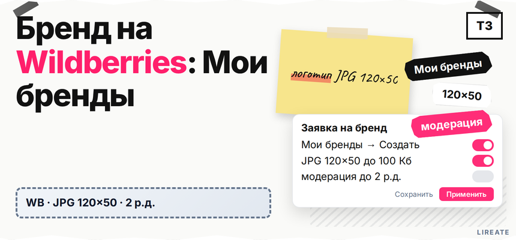
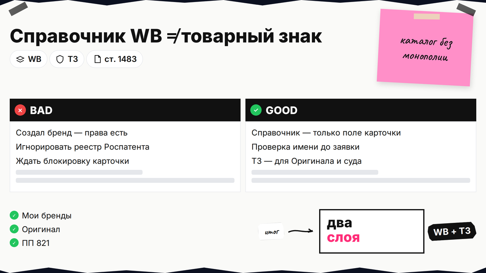
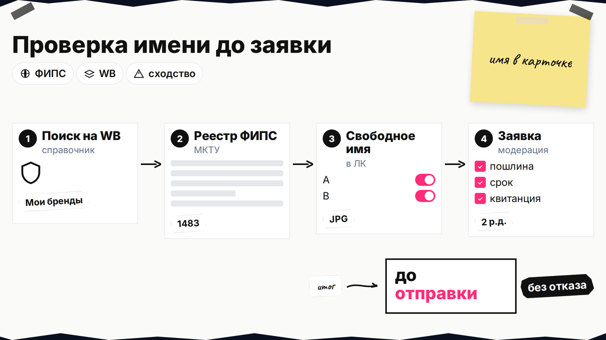
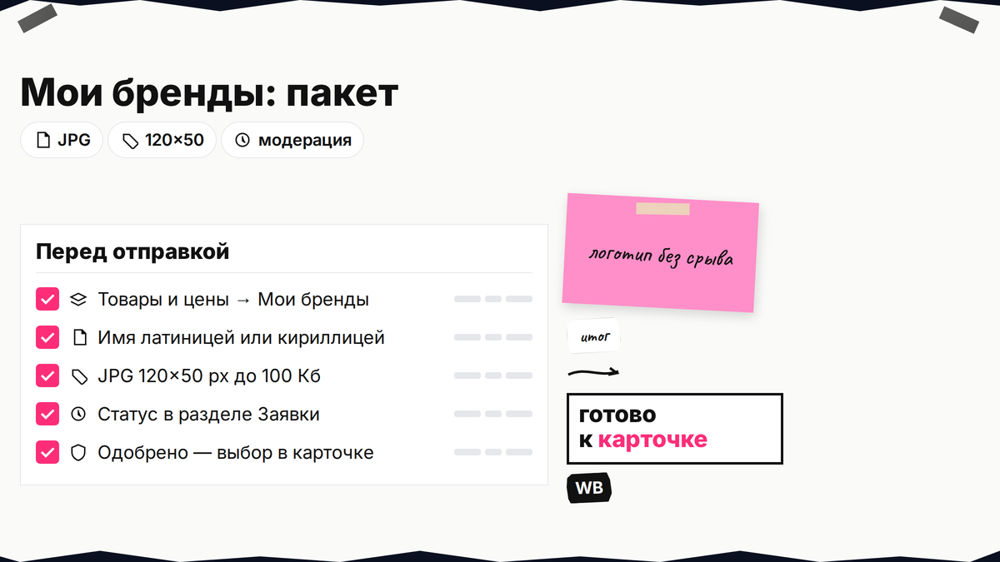

Выводите новую линейку на Wildberries, а поле "Бренд" в карточке пустое: непонятно, занято ли имя в справочнике площадки и нужно ли свидетельство из Роспатента уже сейчас. Ответ простой: бренд на вайлдберриз как добавить можно через личный кабинет селлера за несколько шагов, а товарный знак - отдельный юридический слой. Ниже вы проверите название, создадите бренд в "Мои бренды" или из карточки, дождётесь модерации и поймёте, когда можно продавать без ТЗ, а когда готовить документы. Инструкции WB и нормы о знаках сверены на 13.11.2026; материал не заменяет индивидуальную консультацию.

TL;DR / Быстрый инсайт: "Бренд в ЛК Wildberries" - запись в справочнике для поля карточки; товарный знак - исключительное право в Роспатенте. Создание: "Товары и цены → Мои бренды → Создать бренд" или "Добавить" из карточки. Логотип - JPG 120×50 px, до 100 Кб. Модерация - до 2 рабочих дней в "Заявки". Продавать можно и с "Нет бренда", и пока заявка на проверке. "Создать бренд" не равно "стать представителем": для "Оригинала" нужен ТЗ в реестре. Сверка карточек с госреестром усиливается с 01.03.2027 (ПП РФ № 821).
Этот гайд - только Wildberries. Если нужен тот же маршрут на Ozon и общий календарь 2026-2027, см. материал L03. Глубокую проверку свободы имени в справочнике и в реестре разберите в чек-листе L18.

Делайте: держите в голове два слоя. Первый - бренд в WB Partners: имя и логотип в каталоге площадки, чтобы покупатель видел марку в карточке. Второй - товарный знак: официальная регистрация обозначения в Роспатенте, которая даёт право запрещать чужим использовать похожее имя на однородных товарах (п. 6 ст. 1483 ГК РФ).
Не делайте: называть шаг "Создать бренд" в ЛК "регистрацией бренда в Роспатенте". Свободная строка в справочнике WB не гарантирует, что ФИПС зарегистрирует такое же обозначение.
| Действие в WB | Срок | Нужен ли ТЗ в реестре |
|---|---|---|
| Создать бренд ("Мои бренды") | Модерация до 2 р.д. | Обычно нет на старте |
| Стать представителем ("Рост продаж → Бренды") | До 30 р.д. | Да, действующее свидетельство |
| Значок "Оригинал" | После проверки прав | Да |
| Поле "Нет бренда" | Сразу | Не требуется |

Запрос "как проверить есть ли такой бренд на вайлдберриз" закрывается уже на этапе создания: при вводе имени площадка подсказывает существующую запись (официальная инструкция WB).
Делайте: если система нашла совпадение, выберите готовый бренд (вы продаёте под чужой маркой с их правилами) или смените написание, не дублируя карточку. Параллельно сверьте название и логотип в бесплатной Поисковой платформе Роспатента (круглосуточно с 11.12.2023) и при сомнении пройдите чек-лист L01.
Не делайте: полагаться только на подсказку WB. Имя, свободное в справочнике, может быть занято в реестре ТЗ - риск претензии позже, см. гайд L27.

Основной маршрут для селлера (WB Partners):
Делайте: сохранить скрин формы и дату отправки. Не делайте: пытаться "переименовать" бренд после одобрения - по правилам площадки допустима лишь смена регистра букв; смена логотипа и категорий снова уходит на модерацию.
Альтернатива: в черновике карточки поле Бренд → Выбрать / Добавить открывает ту же форму, заявка попадает в "Мои бренды".
Делайте: если карточка срочная, опубликуйте её во время модерации бренда - товар может выйти в продажу, а поле "Бренд" подтянется после "Одобрено". Не делайте: считать отказ по бренду автоматической блокировкой всего кабинета: при "Отклонено" исправьте логотип или имя по комментарию и подайте снова; карточка без бренда останется с пустым полем.
Схема заявки:
Имя и логотип → отправка → статус "На модерации" (до 2 р.д.) → "Одобрено" → выбор бренда в карточках
или "Отклонено" → правка → повторная заявка
Технические требования WB: файл JPG, ровно 120×50 пикселей, вес до 100 Кб (справка seller.wildberries.ru).
Делайте: проверить, что на изображении нет чужих зарегистрированных знаков и мелкий текст читается на мобильном превью. Не делайте: вставлять скачанный логотип известного бренда "для красоты" - типичный повод отклонения и претензия по L27.
Статусы в "Заявки": На модерации, Одобрено, Отклонено. После одобрения выберите бренд в активных карточках; при совпадении имени в форме всегда берите существующую запись, а не создавайте дубликат.
Регистрация бренда WB без ТЗ - нормальный сценарий для теста ниши, private label без упаковки с крупным логотипом или продаж под нейтральным "Нет бренда". Документы Роспатента на старте не требуются, если вам достаточно поля в карточке.
Делайте: честно оценить масштаб: растёт оборот, появляется фирменная упаковка, конкуренты копируют название - пора закладывать месяцы на регистрацию ТЗ, а не дни на модерацию WB. Не делайте: путать поданную заявку в Роспатент с действующим свидетельством: для статуса представителя и "Оригинала" нужен именно зарегистрированный знак в реестре.
Когда нужна защита имени, загрузите свидетельство и пройдите отдельный трек Рост продаж → Бренды → стать представителем (до 30 рабочих дней, по открытым селлер-гайдам с отсылкой к WB). Это не тот же клик, что "Создать бренд".
Делайте: перед подачей сверить классы МКТУ и обозначение с карточками. Предварительную оценку охраноспособности по одному классу можно заказать в ФИПС (тариф 46 200 руб. на 15 р.д. по сводке тарифов ГАРАНТ, октябрь 2026). Для полного цикла регистрации подключите сопровождение регистрации товарного знака на Лирейт.
Не делайте: ждать, что WB сам "зарегистрирует" ваше имя в Роспатенте после модерации логотипа.
С 01.10.2026 действует основная часть 289-ФЗ о платформенной экономике. По разделу IX ПП РФ № 821 с 01.03.2027 маркетплейсы усиливают сверку прав на ТЗ с госреестром; повторная проверка при правках карточки - до 3 рабочих дней (текст постановления).
Делайте: заранее подтянуть документы, если продаёте под именем, похожим на известные марки. Не делайте: дублировать бренд с опечаткой ради обхода модерации - риск блокировки карточки и спора по L27.
Опишите ситуацию: модерация бренда на WB, отказ по логотипу или подготовка ТЗ под маркетплейс. Подскажем порядок по ГК РФ и инструкциям площадки.
Материал проверен: редакция Лирейт, практика селлеров Wildberries и регистрации товарных знаков.
Достоверность данных: путь "Мои бренды", размер логотипа 120×50 JPG до 100 Кб, сроки модерации до 2 р.д. и трек представителя сверены с seller.wildberries.ru и открытыми селлер-гайдами на 13.11.2026; нормы 289-ФЗ, ПП № 821 и ст. 1483 ГК РФ - с КонсультантПлюс.
Да. "Создать бренд" в ЛК не требует свидетельства Роспатента. Для представительства и "Оригинала" ТЗ в реестре обязателен.
Введите название в "Создать бренд": площадка покажет совпадение. Дополнительно сверьте имя в Поисковой платформе и пройдите L18, если планируете регистрацию ТЗ.
JPG, 120×50 пикселей, не больше 100 Кб. После смены логотипа заявка снова проходит модерацию.
До двух рабочих дней. Статусы смотрите в "Мои бренды → Заявки".
Да, если создавали бренд из карточки: карточку можно опубликовать, а поле "Бренд" заполнится после одобрения.
"Создать бренд" добавляет запись в справочник для карточек (дни модерации). "Представитель" подтверждает права правообладателя (недели, нужен ТЗ в реестре).
Когда растёт узнаваемость, нужна упаковка с защитой имени, статус "Оригинал" или готовится сверка с реестром с 01.03.2027. Начните с L01 и при необходимости подачи на регистрацию.